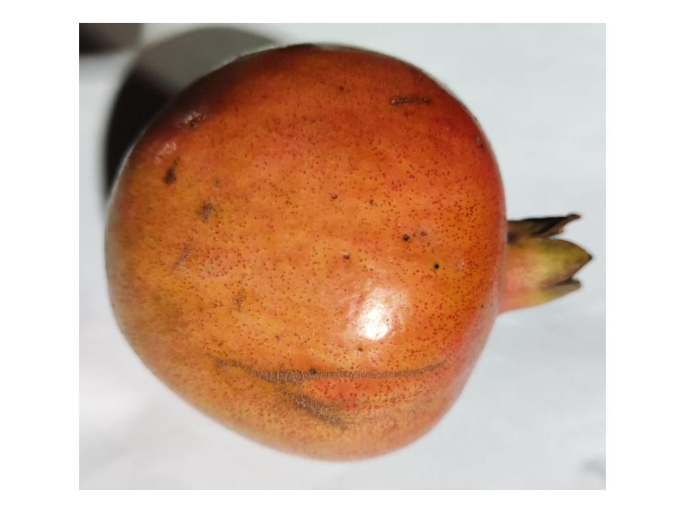
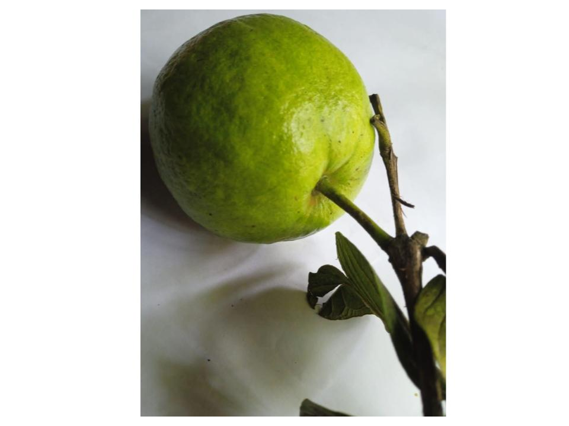
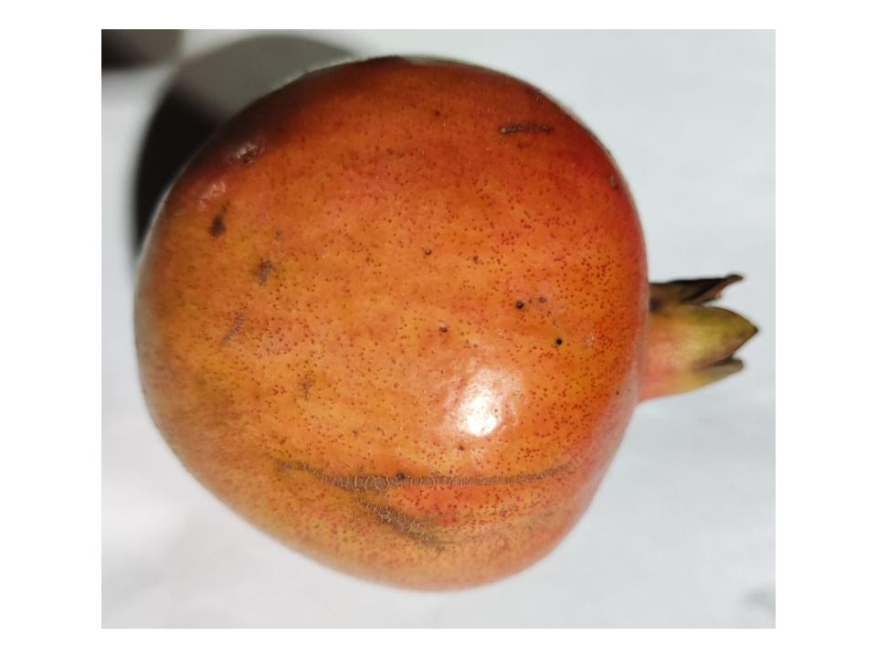
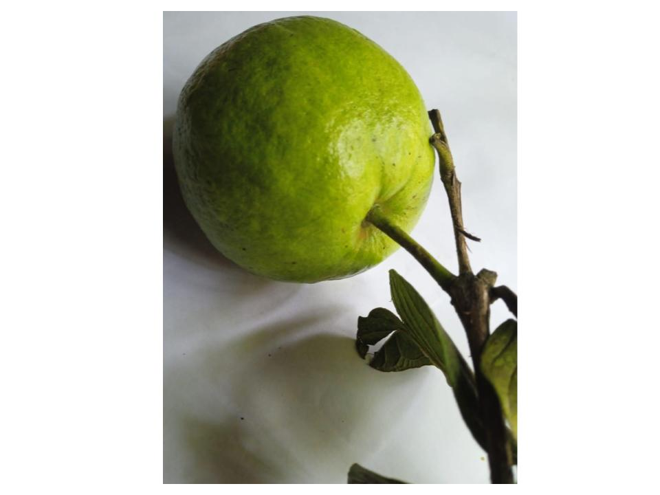

AI Scholars: Spoiled Food Classifier
Our Model Detects The Safety of Produce
Please upload a photo of one of 8 fruits: Apple, Banana, Grape, Orange, Guava, Jujube. Our model will be able to detect whether the fruit is spoiled or fresh!
Status
Model Output

 


